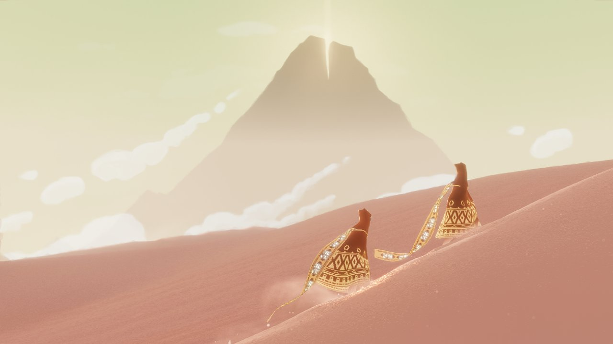
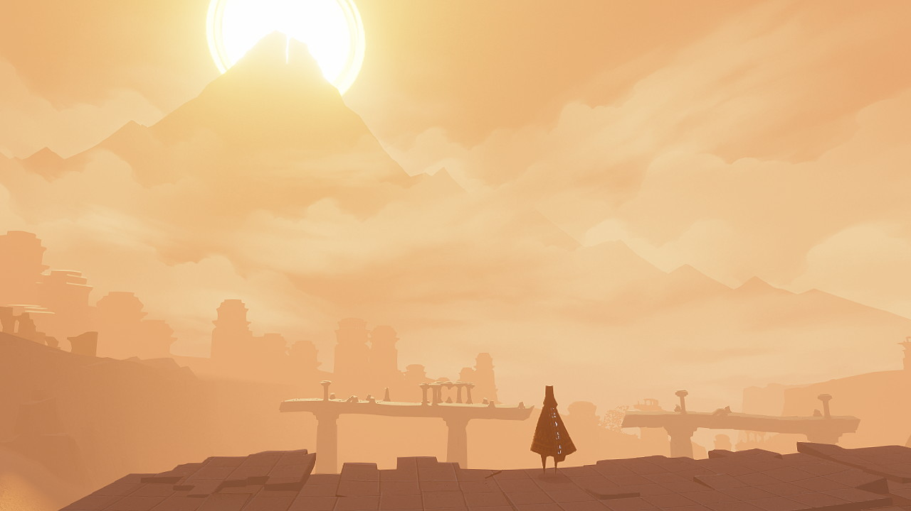

"Openness" can mean many things in the english language: inviting, vast, empty, open-ended. For this study, I want to focus on openness in the sense of "vast", but also "open-ended".
Journey
Journey is a long trek across an open desert to a mysterious mountain.


Along the way, you may encounter other players. Your journey together is mostly in silence. Sometimes you communicate through chirps.
By limiting the ways that players can communicate, Journey creates a profound sense of companionship in this vast landscape.
